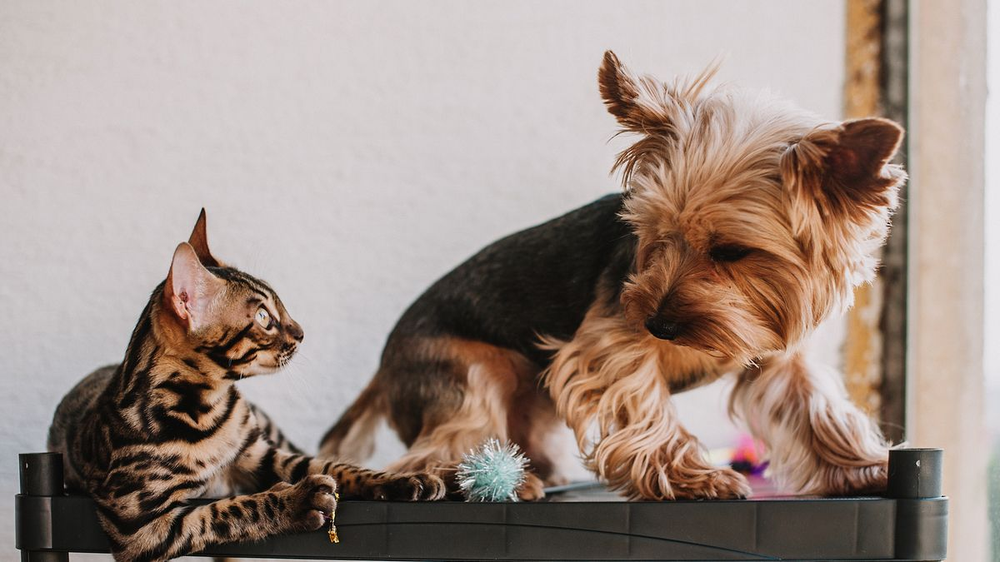

기본 점검
스테인리스·세라믹 그릇(5천~1만 원), 높이(어깨−15cm), 하루 2회 전량 교체, 주 3회 뜨거운 물 세척. 급식 구역에서 50cm 떨어진 곳에 두면 식사 후 자연스럽게 마십니다.

도움이 될 수 있는 방법
- 건식만 먹는다면 습식 10g을 하루 1회 혼합
- 여름: 얼음 2~3개(2시간마다 교체)
- 겨울: 미지근한 물(20℃ 내외)로 교체
- 이동 후 5분 내 물 제공
건조 사료만 먹는다면 저염 육수(물 200ml+닭고기 국물 1스푼 무염)를 하루 1회 시험할 수 있습니다. 그릇 재질을 스테인리스에서 세라믹으로 바꿔 보는 것도 거부 감소에 도움이 될 수 있습니다.
음수량 관찰
그릇 리필 횟수를 7일 기록합니다. 평소 3회→1회로 48시간 지속, 또는 3회→8회로 급증 시 메모와 함께 검진을 검토하세요.
여름철 리필 횟수가 2배로 늘면 정상 범위일 수 있습니다. 겨울에 갑자기 50% 줄면 식욕·활동량과 함께 48시간 관찰하세요.
정수기·급수기
급수기(2~8만 원)는 3일마다 필터·물 교체가 필수입니다. 관리가 안 되면 오히려 세균이 늘 수 있습니다. 기본 그릇 2개+청소가 먼저입니다.

급수기 도입 전 기본 그릇 2곳+주 3회 세척을 2주 지켜 보세요. 급수기는 청소 부담이 늘어나므로, 관리 주기를 캘린더에 넣을 수 있을 때 선택하는 편이 낫습니다.
실전 적용 노트
물 섭취는 '많이 마시게 하기'보다 '같은 자리·같은 그릇·깨끗한 물'이 먼저입니다. 그릇 위치가 바뀔 때마다 안 마시는 개체를 자주 봅니다.
스테인리스·세라믹 그릇은 플라스틱보다 냄새가 덜 남습니다. 하루 1~2회 물을 갈아 주는 것이 기본입니다.
건식 사료 위주라면 물그릇을 사료 그릇 옆 30cm 이내에 두세요. 습식 비율을 늘리는 것도 수분 보충에 도움이 됩니다.
여름·난방기 사용 시 그릇을 2개로 늘리거나, 얼음 몇 조각을 넣는 집도 있습니다. 다만 얼음에 과민하면 넣지 않습니다.
급격히 물을 많이 마시거나 전혀 안 마시면 3일 메모 후 검진을 검토하세요. 소변 횟수·색 변화도 함께 적습니다.
정수기·급수대는 필터 교체 주기를 달력에 넣지 않으면 오히려 위생이 나빠질 수 있습니다.
이동·병원 후에는 물을 조금씩 자주 권하는 편이, 한꺼번에 많이 주는 것보다 안전한 경우가 많습니다.
고양이는 흐르는 물을 선호하는 경우가 있어, 가끔 수도꼭지를 10초만 틀어 주는 것도 시도할 수 있습니다.
물그릇은 식기 세척과 분리해 세척하고, 세제 잔여물이 없도록 헹구세요.
이번 주 수분 섭취 체크리스트입니다. 그릇 위치 고정이 첫 단계입니다.
- 물그릇을 사료 그릇 옆 30cm 이내에 두었습니다.
- 하루 1~2회 물을 갈아 주었습니다.
- 스테인리스·세라믹 그릇을 사용 중입니다.
- 여름·난방기 사용 시 그릇을 2개로 늘리거나 얼음을 검토했습니다.
- 정수기·급수대 필터 교체일을 달력에 넣었습니다.
- 물 섭취 급증·급감을 3일 메모했습니다.
- 물그릇 세척을 식기와 분리했습니다.
- 이동·병원 후에는 조금씩 자주 권했습니다.
안 마시는 날에는 그릇 청결·위치·습식 비율부터 순서대로 점검해 보세요.
물 섭취는 '많이'보다 '깨끗하고 같은 자리'가 먼저입니다. 스테인리스·세라믹 그릇, 하루 1~2회 갈이, 사료 옆 30cm 배치가 기본입니다. 여름·난방기 사용 시 그릇을 늘리거나 습식 비율을 조정하고, 급증·급감은 3일 메모 후 검진을 검토하세요. 정수기 필터 교체일을 달력에 넣지 않으면 오히려 위생이 나빠질 수 있습니다.
물그릇 위치를 5일 고정한 뒤 섭취량을 메모하면, '안 마시는 날' 원인을 좁히기 쉽습니다.
마무리로, 이번 주에는 체크리스트 3개만 골라 2주 반복해 보세요. 작은 성공이 쌓이면 나머지는 자연스럽게 늘어납니다.
기록이 쌓이면 병원·상담 때 설명이 쉬워집니다. 한 줄 메모라도 같은 항목으로 이어 쓰는 것이 핵심입니다.
완벽한 루틴보다 80% 지켜지는 루틴이 오래 갑니다. 안 된 날은 원인 한 줄만 적고 다음 주에 조정하세요.
오늘 당장 하나만 고른다면, 체크리스트 맨 위 항목부터 시작해 보세요. 나머지는 다음 주로 미뤄도 괜찮습니다.
가족이 함께 돌본다면, 누가 했는지 체크박스 한 칸만 추가해도 누락·중복이 줄어듭니다.
검색으로 답을 찾기 전에 7일 메모를 먼저 정리해 보세요. 증상 설명이 훨씬 빨라지는 경우가 많습니다.
새 용품·새 사료·새 루틴은 동시에 바꾸지 않습니다. 한 가지만 바꾸고 5일 관찰하는 편이 안전합니다.
이번 달 목표는 '매일 완벽'이 아니라 '이번 주 3회 성공'입니다. 0회에서 1회로 바뀌는 것만으로도 충분한 진전입니다.
스트레스 신호(회피·짖음·숨 가쁨)가 보이면 시간을 반으로 줄이세요. 짧게 자주 성공하는 쪽이 학습에 유리합니다.
계절·이사·손님처럼 환경이 바뀌는 주에는 루틴을 단순화하세요. 필수 3개만 지키고 나머지는 다음 주로 미뤄도 됩니다.
정리하며
급수기 샀는데 물 안 마시는 집은 대부분 그릇 청소 주기가 2주였습니다.
저는 음수 글에서 장비 이름보다 '마지막 세척이 며칠 전인지'를 먼저 봅니다.
그릇 마지막 세척이 며칠 전인지만 확인해 보세요. 장비보다 청소 주기가 먼저입니다.
초보자가 자주 실수하는 포인트
- 물 3일째 그대로 둠
- 급식 그릇 바로 옆에만 배치
- 급수기 필터 2주 미교체
- 음수량 급변 무시
- 세제 잔류물 헹굼 부족
체크리스트
- 하루 2회 물 전량 교체
- 주 3회 뜨거운 물 세척
- 거실·침실 2곳 배치
- 리필 횟수 7일 메모
- 건식+습식 10g 시험
자주 묻는 질문
- 물을 잘 안 마시면 어떻게 하나요?
- 그릇 위치·청소 주기·2곳 배치를 먼저 점검하세요. 건식 위주면 습식 10g 추가를 1주 시험해 보세요.
- 급수기가 꼭 필요한가요?
- 아닙니다. 청소가 잘 되는 기본 그릇 2개만으로도 충분한 경우가 많습니다. 필터 교체 주기를 지킬 자신이 있을 때 고려하세요.
- 음수량이 갑자기 늘었어요.
- 48시간 패턴을 메모하세요. 식욕 유지·활동 정상인데 2배 이상 지속되면 검진을 검토하세요.
이 글은 초보자 기준으로 이해하기 쉽게 정리되었으며, 내용은 운영 과정에서 순차적으로 보완될 수 있습니다. 수의사 등 전문가의 진단·처치를 대체하지 않습니다.